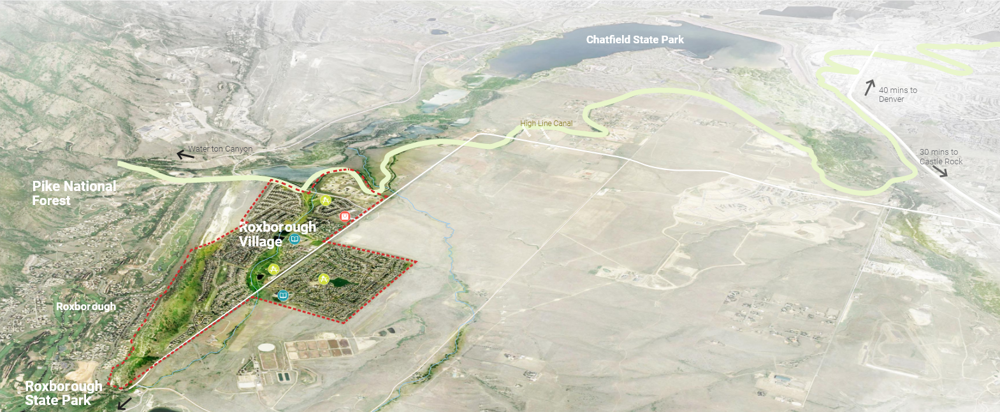
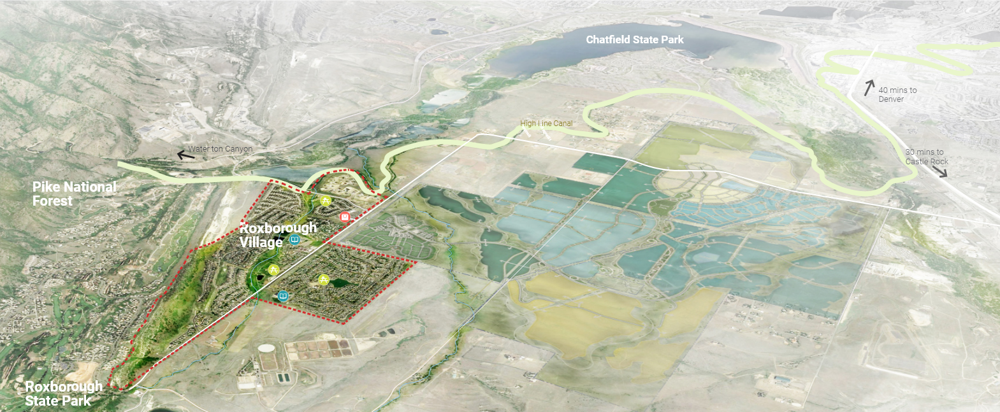

Introduction
RVMD Context
Current Context Map
RVMD is a 959 acre District, and home to over 6,000 residents. Roxborough Park is neighbor to Roxborough Village and a separately funded entity, though their residents do use Roxborough Village schools, commercial areas, and recreation facilities. With close proximity to two state parks, the regional High Line Canal trail, Waterton Canyon, and the Rocky Mountains, the RVMD is known for its community, nature, and wildlife.
The District has been fairly isolated since its establishment, however, the District and its surrounding experience could change with new adjacent master planned communities in the near future. It is important for the District to stay proactive in maximizing recreational opportunities for residents and to plan ahead for the future.
Future Context Map
With full build-out of two major new master planned communities, Sterling Ranch and Solstice, RVMD will face an influx of new homes and facilities.
At its completion, Sterling Ranch will encompass 3,400 acres and anticipates to have approximately 33,000 residents over the next twenty years. Solstice is a 383 acres development with 1,100 new homes planned.
Sterling Ranch will ultimately provide a wide array of amenities, including a mixed use office / retail town center, Civic Center, Rec Center, park and lake, extensive 30 miles trail system, and 4 new schools.
With the addition of its new neighbors, the District faces pressure to stay competitive in the housing market, and the need to re-evaluate its amenities and facilities for the residents.
